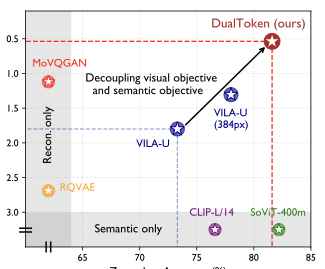
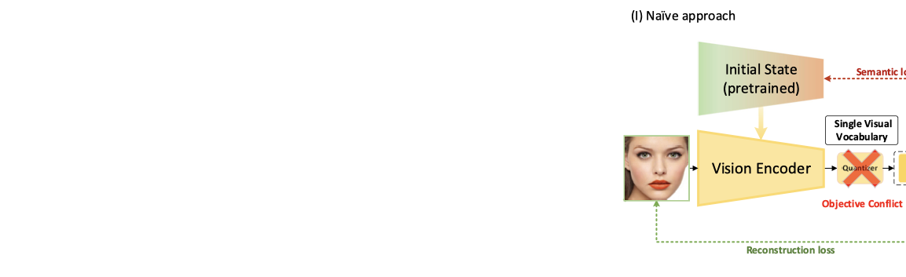
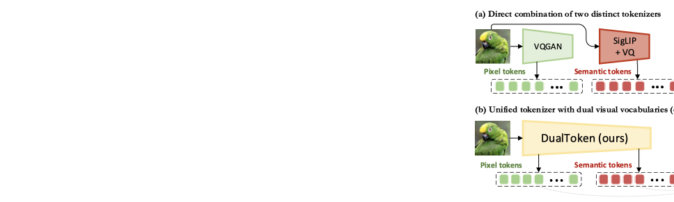
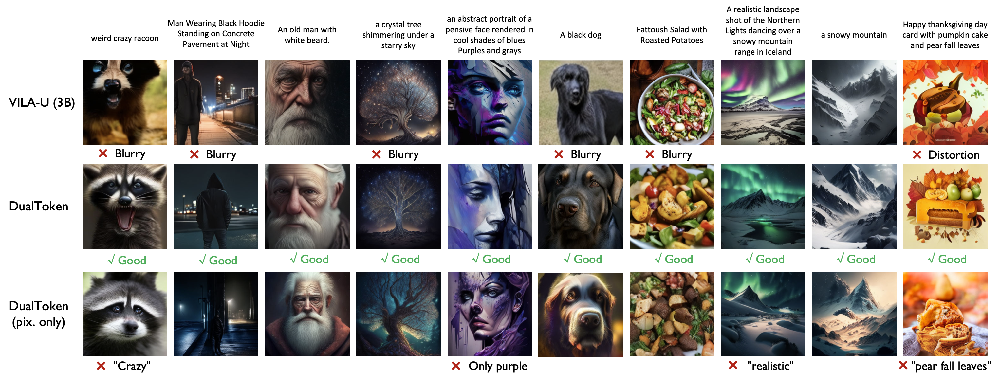

Tokenizer quality
0.25 rFID, 28.69 PSNR, and 0.744 SSIM with the SigLIP-So/14-384 backbone, while retaining 82.0% zero-shot ImageNet accuracy.
*Corresponding Authors
The differing representation spaces required for visual understanding and generation pose a central challenge for unified autoregressive multimodal models. Tokenizers optimized for reconstruction preserve low-level appearance but lack language-aligned semantics, while contrastively trained vision encoders offer strong semantics yet cannot be decoded faithfully back to pixels.
DualToken bridges this gap by introducing dual visual vocabularies inside a single tokenizer: a pixel codebook for low-level appearance and a semantic codebook for high-level meaning. Rather than forcing one codebook to satisfy conflicting objectives, DualToken disentangles them hierarchically across shallow and deep transformer layers, enabling strong performance on both sides. The resulting tokenizer achieves 0.25 rFID and 82.0% zero-shot ImageNet accuracy, and the unified multimodal model outperforms VILA-U on both understanding and generation benchmarks.
DualToken factorizes image representation into pixel tokens for reconstruction and semantic tokens for understanding, without increasing visual sequence length in the unified MLLM.
Reconstruction supervision is applied to shallow layers, while semantic preservation is applied to deep layers, turning a destructive tradeoff into a complementary learning setup.
Compared with directly combining a VQGAN-style encoder and a CLIP-style encoder, DualToken keeps both vocabularies inside a more compatible shared representation space.
Pixel tokens improve downstream recognition of fine details, and semantic tokens improve autoregressive image generation by preserving semantic structure throughout decoding.
Directly optimizing one codebook for both semantic preservation and image reconstruction causes a strong objective conflict. In the paper, this appears as degraded semantic metrics and blurry, distorted reconstructions.


DualToken analyzes the internal hierarchy of SigLIP and uses shallow features for reconstruction while preserving semantic alignment in deep features. Each feature stream is discretized with residual vector quantization to form its own visual vocabulary.
Inside the unified model, pixel and semantic tokens are projected into the LLM hidden space and concatenated along the embedding dimension. This preserves sequence length while giving the language model access to both low-level detail and high-level meaning.

0.25 rFID, 28.69 PSNR, and 0.744 SSIM with the SigLIP-So/14-384 backbone, while retaining 82.0% zero-shot ImageNet accuracy.
Within the LLaVA-1.5 framework, DualToken improves the average score across ten understanding benchmarks from 48.1 for VILA-U to 53.9.
DualToken-3B (384px) reaches 76.2 on MMBench, 72.2 on SEED, and 1588.4 on MME, competitive with much larger unified models.
On GenAI-Bench advanced prompts, DualToken-3B improves the overall score from 0.60 for reproduced VILA-U 3B to 0.68, and clearly outperforms the pixel-only ablation.

Qualitative results from the paper show that DualToken generates sharper, more semantically faithful images than VILA-U and a pixel-only ablation, especially under long or compositional prompts.
The paper shows that a naive dual-encoder design creates a large representational mismatch between low-level and semantic features. DualToken avoids this by learning both vocabularies within one compatible architecture.
Pixel tokens recover high-frequency visual clues that improve understanding, while semantic tokens act as positive semantic supervision during generation, producing outputs that better match the prompt.
@inproceedings{song2026dualtoken,
title={DualToken: Towards Unifying Visual Understanding and Generation with Dual Visual Vocabularies},
author={Song, Wei and Wang, Yuran and Song, Zijia and Li, Yadong and Zhou, Zenan and Chen, Long and Xu, Jianhua and Wang, Jiaqi and Yu, Kaicheng},
booktitle={The Fourteenth International Conference on Learning Representations},
year={2026}
}